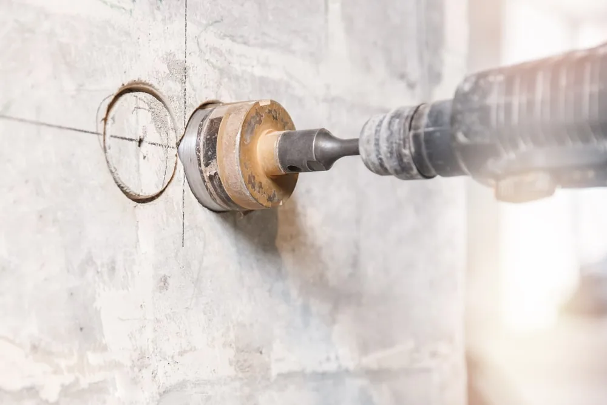

Tjenester
Betong, fra kutt til overflate.
Vi er spesialister innen betong og en av de største leverandørene av slike tjenester i Innlandet fylke.
Betongsaging og boring
Presise kutt og hull i betong, også der armeringen sitter tett. Vi tilpasser utstyret etter veggtykkelse, tilgjengelighet og hva som er under.
- 01SagingDører, vinduer, rørgjennomføringer og utsparinger.
- 02BoringHull for rør, ventilasjon og kabler.
- 03PresisjonMerking og kontroll før kuttet tas.
Betongsprøyting og betongpumping
Der det er trangt, høyt eller langt inn, er sprøyting og pumping løsningen. Vi leverer massen dit den skal, uten å måtte frakte den gjennom bygget.
Arbeidet planlegges etter konstruksjonen, med armering og heft som en del av jobben.
03 / Overflate
Sandblåsing
Overflatebehandling som fjerner gammelt og gir feste for nytt pålegg.
04 / Gulv
Epoxy
Slitesterke gulv og overflater i industri, verksted og næring.
05 / Riving
Innvendig riving
Riving innendørs med kontroll på støv og bærende konstruksjoner.
Bilder fra arbeidet
Vi liker å vise hva vi gjør. Her er noen bilder fra oppdrag med boring, sprøyting og riving.
